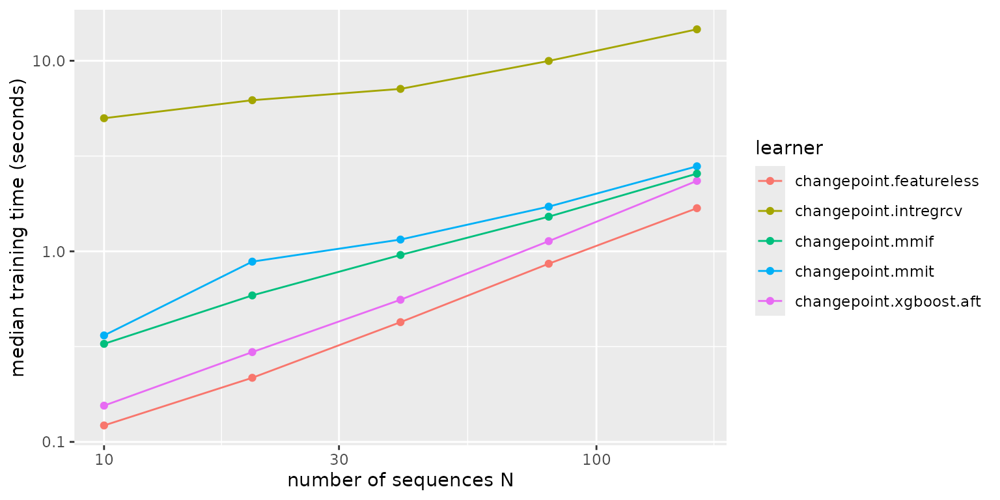

Benchmarking the learners
case-study-benchmark.RmdThis case study compares the four learners on label error and on
training time, with changepoint.featureless as the baseline
that predicts one constant penalty. The data are simulated, so the
number of sequences can grow as needed.
Simulated sequences
simulate_task() draws n_seq sequences of
200 points. Each has its own noise level between 0.5 and 5, so one
penalty cannot suit them all. Odd sequences change mean once, by three
times their noise level, between positions 80 and 120. They carry a
1change label around the change and a 0changes
label before it. Even sequences are flat, with one 0changes
label.
simulate_task = function(n_seq, n_data = 200L) {
signal = vector("list", n_seq)
label = vector("list", n_seq)
for (i in seq_len(n_seq)) {
noise = exp(runif(1L, log(0.5), log(5)))
if (i %% 2L == 1L) {
change = sample(80:120, 1L)
signal[[i]] = c(rnorm(change, 0, noise), rnorm(n_data - change, 3 * noise, noise))
label[[i]] = data.table(
start = c(1, change - 10),
end = c(change - 20, change + 10),
label = c("0changes", "1change")
)
} else {
signal[[i]] = rnorm(n_data, 0, noise)
label[[i]] = data.table(start = 1, end = n_data, label = "0changes")
}
}
TaskCpt$new(
id = paste0("simulated_", n_seq), backend = data.table(signal = signal, label = label),
target = "label", sequence = "signal", label_type = "changepoint"
)
}All learners use Kmax = 2. The MMIT and MMIF learners
are included when the mmit package is installed.
has_mmit = requireNamespace("mmit", quietly = TRUE)
learners = list(
lrn("changepoint.featureless", Kmax = 2L),
lrn("changepoint.intregrcv", Kmax = 2L, n.folds = 2L, min.observations = 2L),
lrn("changepoint.xgboost.aft", Kmax = 2L)
)
if (has_mmit) {
learners = c(learners, lrns(c("changepoint.mmit", "changepoint.mmif"), Kmax = 2L))
}Label error
Three-fold cross-validation on 80 sequences, with the same folds for every learner:
set.seed(1)
task = simulate_task(80L)
measures = msrs(c("changepoint.label_error", "changepoint.auc"))
design = benchmark_grid(task, learners, rsmp("cv", folds = 3L))
bmr = benchmark(design)
bmr$aggregate(measures)[, .(learner_id, changepoint.label_error, changepoint.auc)]
#> learner_id changepoint.label_error changepoint.auc
#> <char> <num> <num>
#> 1: changepoint.featureless 0.04980155 0.9962252
#> 2: changepoint.intregrcv 0.00000000 1.0000000
#> 3: changepoint.xgboost.aft 0.00000000 1.0000000
#> 4: changepoint.mmit 0.02564103 0.9985755
#> 5: changepoint.mmif 0.04222579 0.9978632The best penalty grows with the noise variance of a sequence. The
features include variance estimates, so every learner can follow it.
With about 53 training sequences per fold,
changepoint.intregrcv and
changepoint.xgboost.aft get every label right, and the tree
learners miss a few. changepoint.featureless misses about
one label in twenty: with no features it cannot follow the noise level,
which is what the other learners gain from them.
Training time
The timing loop trains each learner on simulated tasks of
N = 10, 20, 40, 80 and 160 sequences, three times per size,
and keeps the median elapsed time from system.time().
timings = list()
for (n_seq in c(10L, 20L, 40L, 80L, 160L)) {
set.seed(1)
task_n = simulate_task(n_seq)
for (learner in learners) {
seconds = numeric(3L)
for (r in seq_len(3L)) {
seconds[r] = system.time(learner$clone(deep = TRUE)$train(task_n))[["elapsed"]]
}
timings[[length(timings) + 1L]] = data.table(N = n_seq, learner = learner$id, seconds = median(seconds))
}
}
timings = rbindlist(timings)
dcast(timings, N ~ learner, value.var = "seconds")
#> Key: <N>
#> N changepoint.featureless changepoint.intregrcv changepoint.mmif
#> <int> <num> <num> <num>
#> 1: 10 0.122 4.994 0.327
#> 2: 20 0.217 6.209 0.587
#> 3: 40 0.425 7.118 0.957
#> 4: 80 0.861 9.978 1.520
#> 5: 160 1.684 14.621 2.557
#> changepoint.mmit changepoint.xgboost.aft
#> <num> <num>
#> 1: 0.362 0.155
#> 2: 0.883 0.296
#> 3: 1.153 0.557
#> 4: 1.716 1.131
#> 5: 2.794 2.343The plot uses log scales on both axes, so a power law
seconds ~ N^b is a straight line with slope
b.
ggplot(timings, aes(N, seconds, colour = learner)) +
geom_line() +
geom_point() +
scale_x_log10() +
scale_y_log10() +
labs(x = "number of sequences N", y = "median training time (seconds)")
The slope of a least-squares line through the log-log points
estimates b for each learner:
timings[, .(slope = coef(lm(log(seconds) ~ log(N)))[[2L]]), by = learner]
#> learner slope
#> <char> <num>
#> 1: changepoint.featureless 0.9562196
#> 2: changepoint.intregrcv 0.3783938
#> 3: changepoint.xgboost.aft 0.9769964
#> 4: changepoint.mmit 0.6855105
#> 5: changepoint.mmif 0.7306818A slope near 1 means training time grows linearly with the number of
sequences. Every learner first computes the target intervals by running
the segmentation solver on each sequence, which is linear in
N and the same for all learners.
changepoint.xgboost.aft grows about linearly, and the tree
learners a little slower over this range.
changepoint.intregrcv has a slope well below 1 because its
time here is mostly a fixed cost: its internal cross-validation fits a
whole regularisation path, which takes several seconds even for 10
sequences.